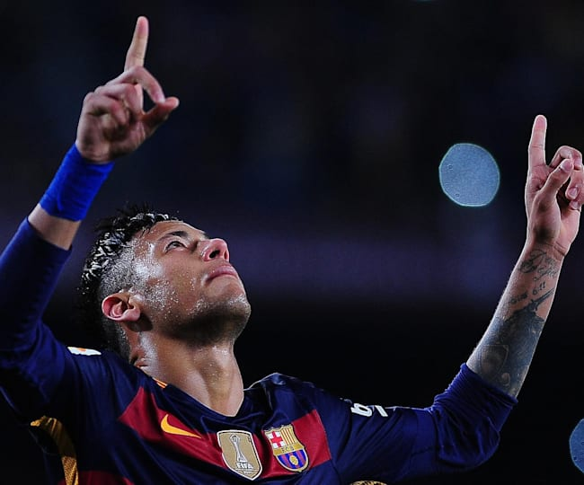
Neymar da Silva Santos Júnior (born 5 February 1992), known as
Neymar, is a Brazilian professional footballer who plays as a forward for Ligue 1 club Paris
Saint-Germain and the Brazil national team. He is widely regarded as one of the best players
in the world.

His full name is Lionel Andrés Messi.
Messi who was born 24 June 1987 is an Argentine soccer player and now participates for La
Liga's Barcelona and the Argentine national team.
Messi is regarded as one of the best and famous soccer players of his generation, by the age
of 21, has received several Ballon d'Or and FIFA World Player of the Year nominations.
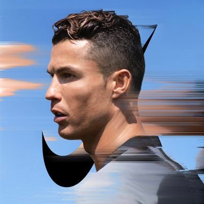
Cristiano Ronaldo dos Santos Aveiro was born in Portugal 5 February
1985. By the age of ten, his talent was becoming well known in Portugal and he was signed
for Nacional, a Portuguese side from Madeira. ... He later signed for Sporting Lisbon – one
of the biggest clubs in Portugal.
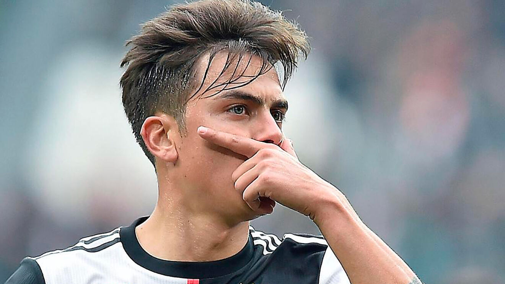
Paulo Dybala (born 15 November 1993) is an Argentine footballer who
plays as a forward for Italian club Juventus and the Argentina national team. He began his
career as a professional footballer in 2011 in the Argentine Second division. In 2012, he
moved to Europe and signed for Palermo.
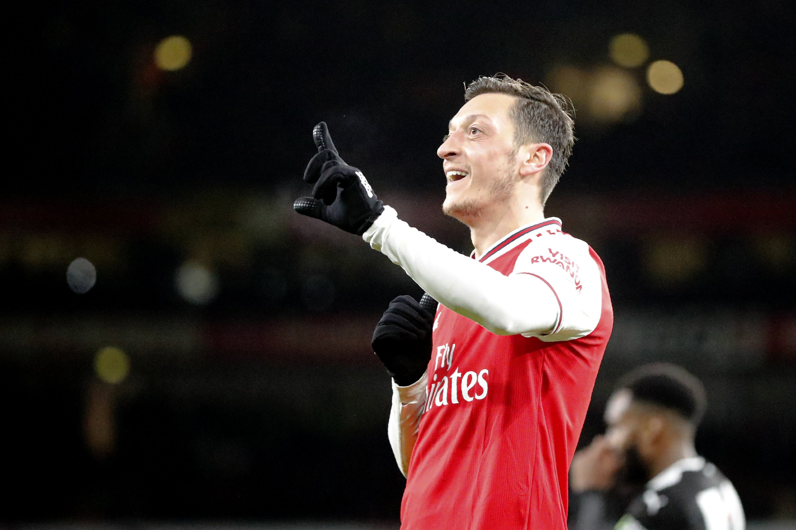
Mesut Özil was born on October 15, 1988, in Gelsenkirchen, Germany.
He is a German footballer who plays for English club Arsenal and the German national team.
Özil has been a youth national team member since 2006, and a member of the German national
team since 2009.
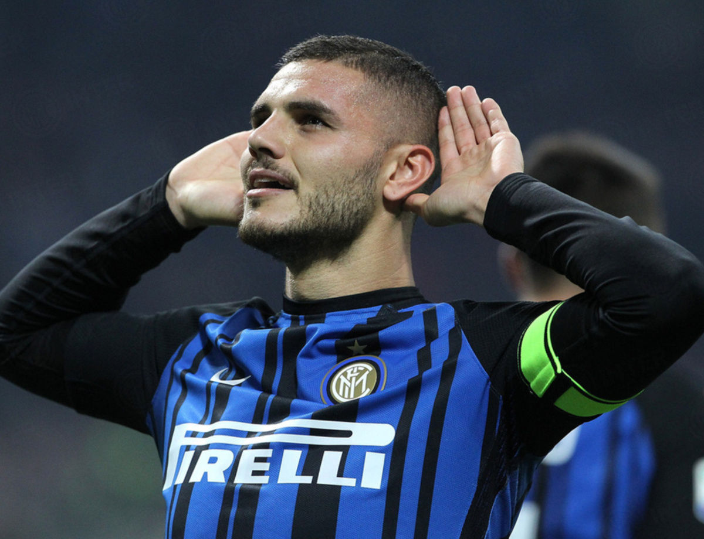
Mauro Emanuel Icardi (Spanish pronunciation: [ˈmawɾo emaˈnwel
iˈkaɾði]; born 19 February 1993) is an Argentine professional footballer who plays as a
striker for Ligue 1 club Paris Saint-Germain and the Argentina national team.
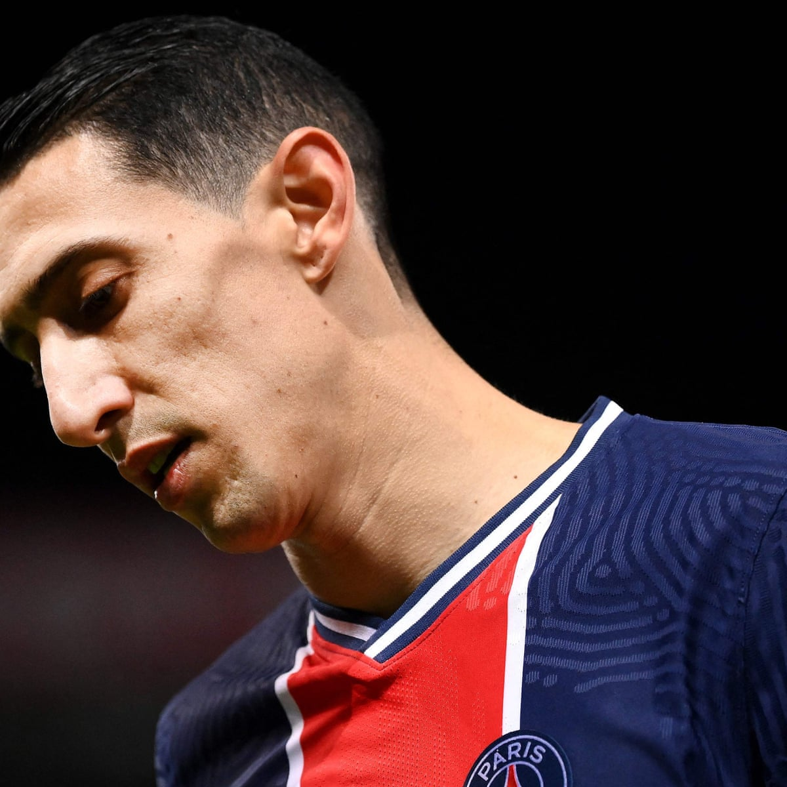
Ángel Fabián Di María (born 14 February 1988) is an Argentine
professional footballer who plays for Ligue 1 club Paris Saint-Germain and the Argentina
national team. He can play as either a winger or attacking midfielder.
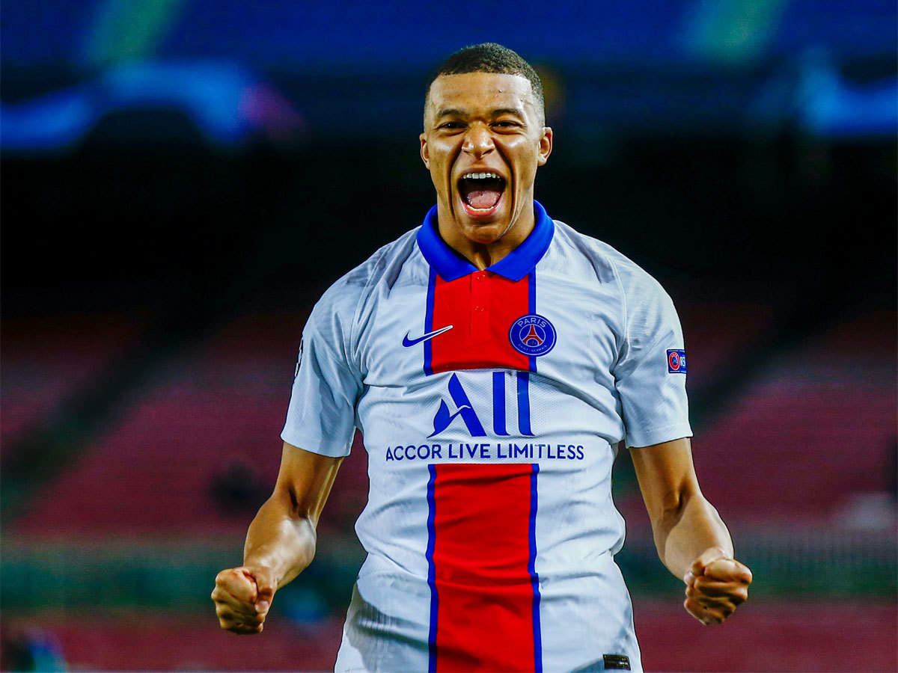
Kylian Mbappé Lottin (born 20 December 1998) is a French professional
footballer who plays as a forward for Ligue 1 club Paris Saint-Germain and the France
national team.
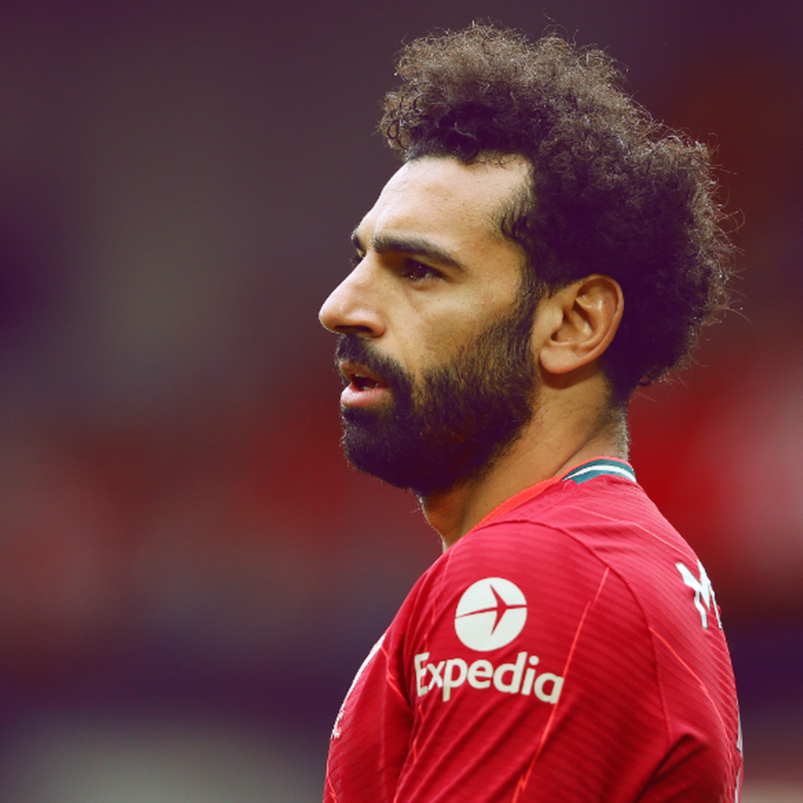
Mohamed Salah is an Egyptian footballer who plays as a forward for
the Egyptian national team as well as the Premier League club 'Liverpool. ' Born and brought
up in Gharbia, Egypt, he is a gifted footballer since his childhood. He started his career
with the youth team of the Egyptian club 'El Mokawloon.
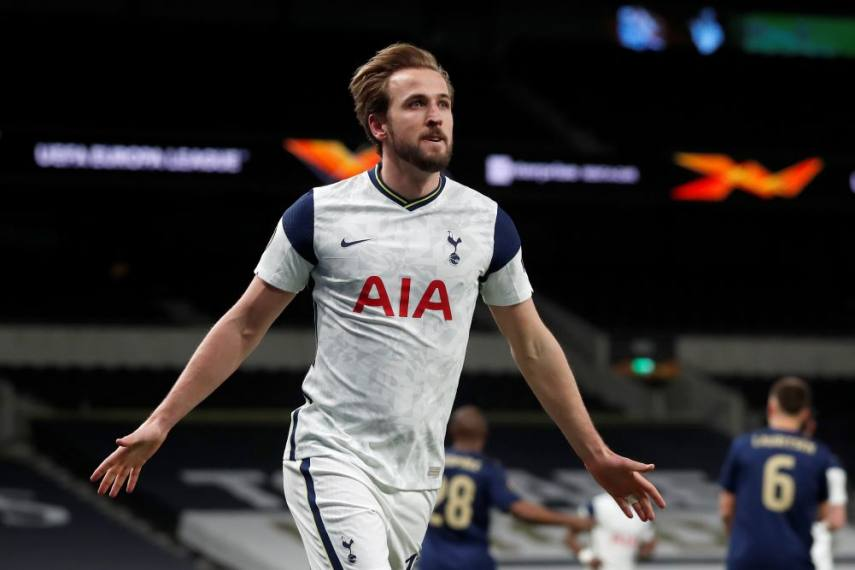
Harry Edward Kane MBE (born 28 July 1993) is an English professional
footballer who plays as a striker for Premier League club Tottenham Hotspur and captains the
England national team. Regarded as one of the best strikers in the world, Kane is known for
his prolific goalscoring record and ability to link play.
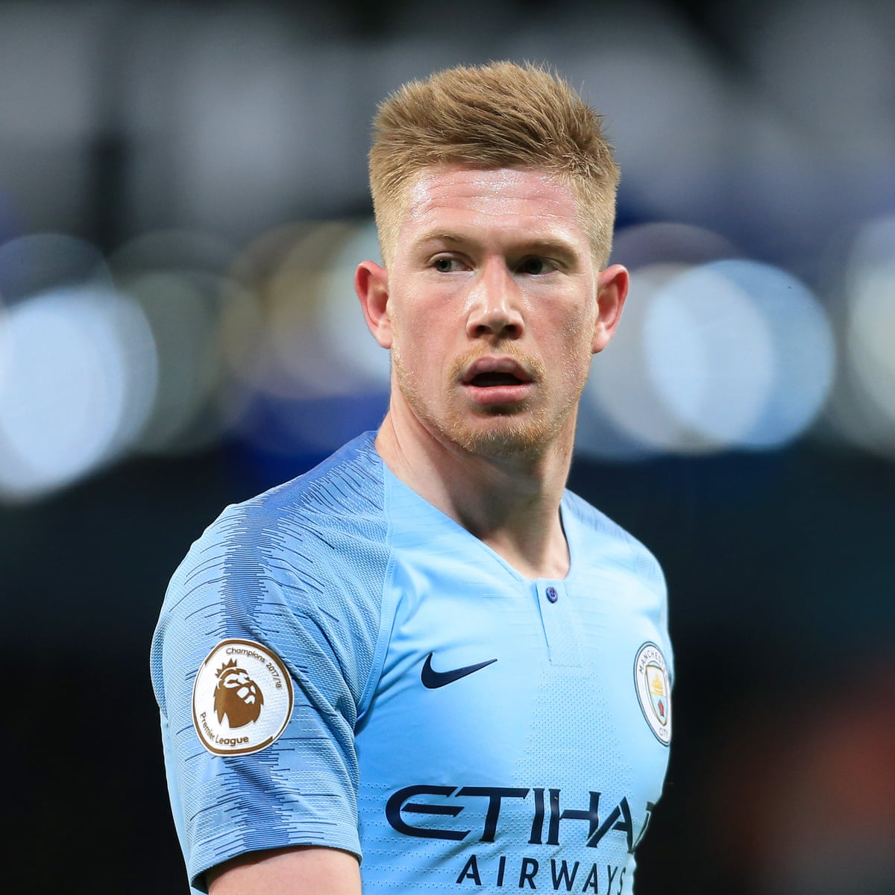
Kevin De Bruyne is a Belgian professional football player who
currently plays for Manchester City and the Belgian national team. He was born on 28 June
1991 in Drongen, Ghent, Belgium. At present, he is considered one of the top players in the
world.
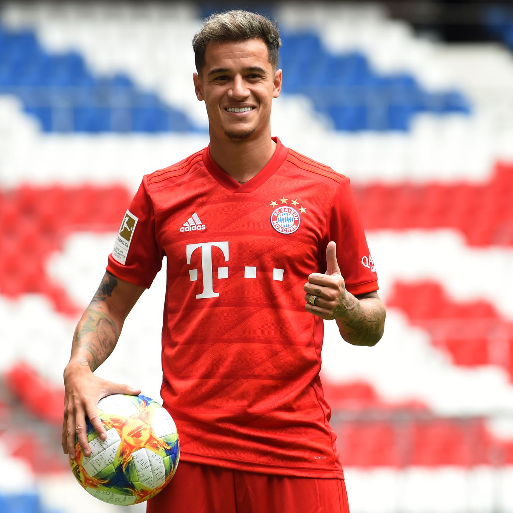
Philippe Coutinho Correia (born 12 June 1992) is a Brazilian
professional footballer who plays as an attacking midfielder or winger for Spanish club
Barcelona and the Brazil national team. He is known for his combination of vision, passing,
dribbling and ability to conjure curving long-range strikes.